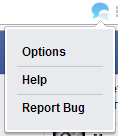
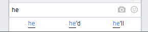
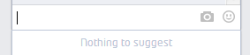
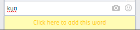
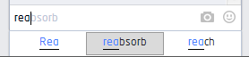

The extension icon is not shown always.
It is shown in the browser address bar only when you open Facebook.
If some error occurs then the icon is not shown.
You can click the icon to load a small popup which gives you four options namely, Options, Help and Report Bug.

You can open all these pages from this popup and can report a bug in extension to help improve the extension(you have to fill up a small google form for this).
Note: If you are a developer and would like to contribute to this project, then visit its repo here :
Smart Typer Repository.
The word suggestions appear in a small box(called "Suggest-Box") below the place where you would be typing(the textarea).

Autocomplete suggestions are shown only for words of atleast 2 letters.
When suggestions are not being shown it shows "Nothing to suggest" status in the Suggest-Box.

But, when it tries to find suggestions and does not find matching autocomplete suggestions in existing dictionary(default Great Britain English dictionary), then it will show a button(yellow area which blinks 3 times) in place of Suggest-Box, showing the status "Click to add this word".
If you think that you want this word to be used in for future autocomplete suggestions, then just click this button.

It will add the word to your Custom Dictionary which you can manage from Options page.
Help regarding how to manage your Custom Dictionary is provided in Options page itself.
Now, in case suggestions for a word are available, maximum 3 suggestions are shown at a time.
You can focus any suggestion using the "Down" arrow key which will highlight that word. The highlighted word will also appear as suggestion in the input area or textarea itself.

To move to next set of suggestions keep pressing the Down arrow key till you end at 3rd suggestion. After this one more Down arrow keystroke will show you next suggestion set, if found.
To move back in suggestions list, press "Up" arrow key. In this way, you can use the Up and Down arrow keys to navigate in suggestion list.
Now, to select a word and autocomplete it as in the suggestion simply use the "Tab" key or use your mouse to "Click (left click)" on that word.
To summarize, use these keys: